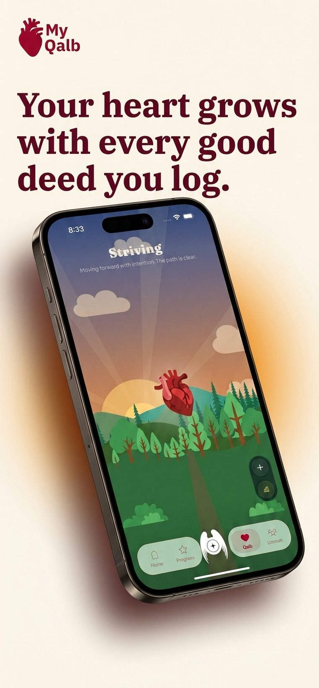
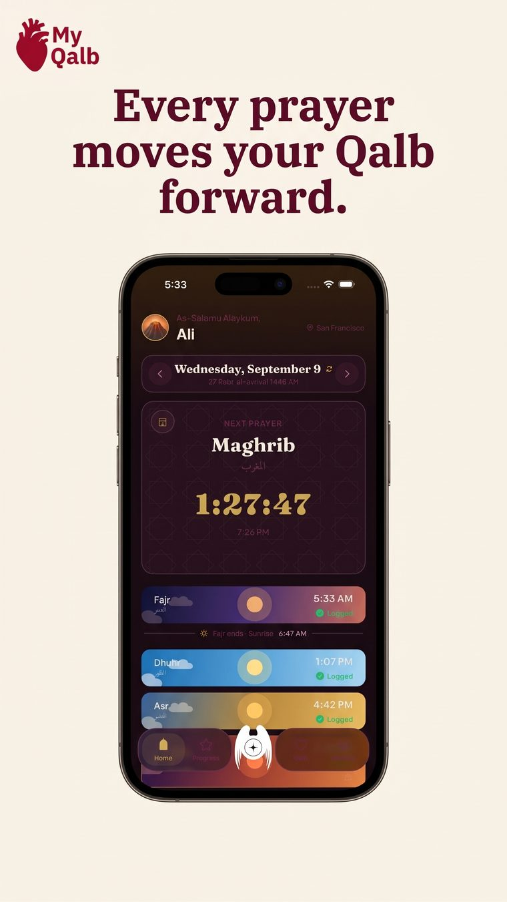
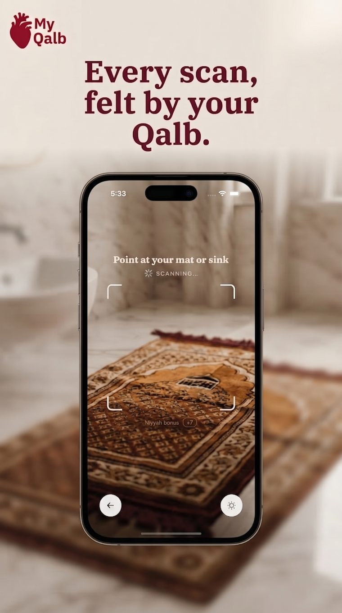
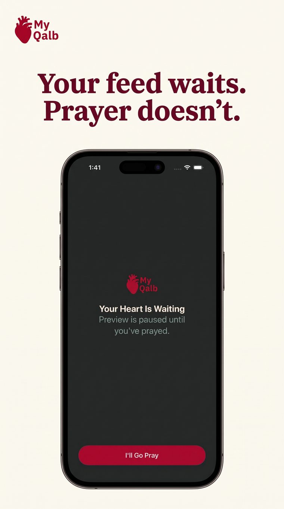
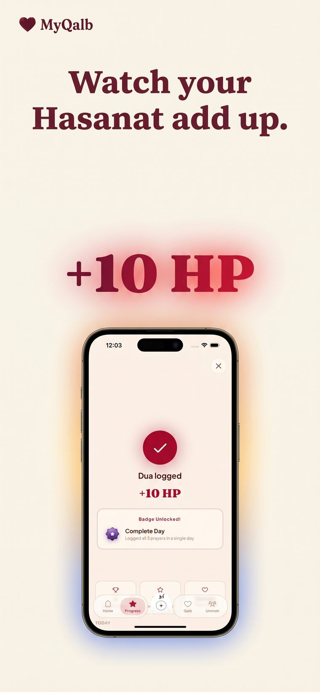
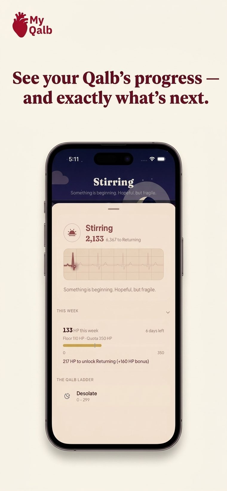
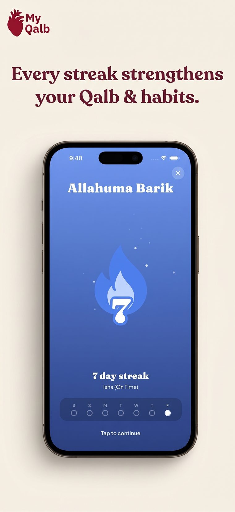
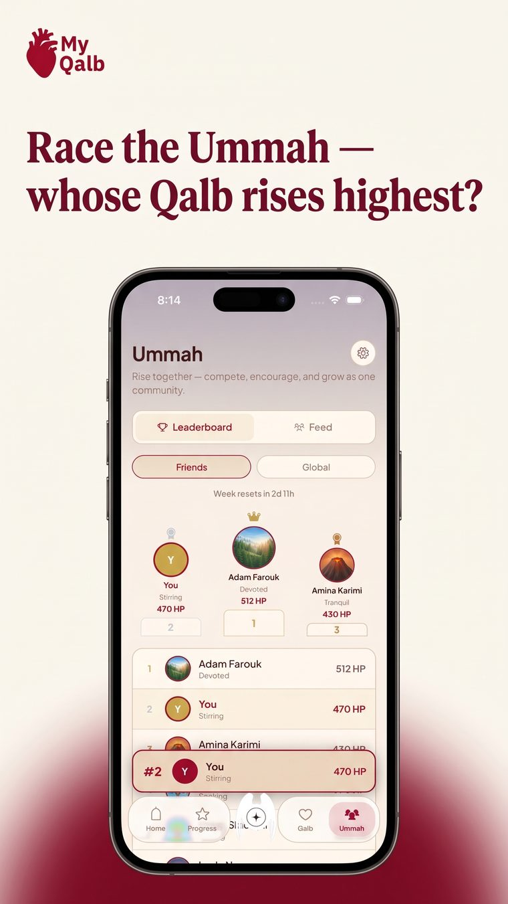

A companion for your five daily prayers
MyQalb turns Fajr through Isha, your dhikr, and your good deeds into the health of a living heart — one that visibly rises from Desolate to Radiant as you build the habit of remembering Allah, one day at a time.
The Qalb ladder
Nothing in MyQalb is a made-up game mechanic — the ladder is a real reflection of consistency, sourced from the same points your prayers and deeds already earn. Miss a week and it can slip. Show up, and it climbs.

The Qalb
Every prayer, every dhikr, every act of charity shows up as real change in a living environment — from a dark, barren night to a forest at dawn. It isn't decoration. It's a mirror.

Prayer times
Accurate times for wherever you are, with each one marked on time or late as you go — no end-of-day guessing about which one actually counted.

Scan to confirm
Point your camera at your prayer mat or a sink before wudu, and MyQalb knows you went and prayed — not just tapped a button from bed.

Prayer focus
Turn on Prayer Focus and the apps that pull at your attention pause themselves the moment a prayer window opens — until you've actually prayed.

Hasanat
Quran, dhikr, salawat, sadaqah, fasting — each has a place to be logged and a weight of its own, adding into a single number you can watch grow.

Progress
A weekly floor to hold steady and a quota to unlock the next state, both visible at a glance — so nothing about your standing is ever a mystery.

Streaks
Log even one prayer and the streak holds — missing four of five on a hard day shouldn't erase the one you made time for. Get all five in, and the flame turns blue.

Ummah
See how your circle is doing this week, cheer each other on, and remember that raising your Qalb was never meant to be a solo climb.
“There is a piece of flesh in the body — if it is sound, the whole body is sound, and if it is corrupt, the whole body is corrupt. It is the heart.”Prophet Muhammad ﷺ — Sahih al-Bukhari & Muslim
MyQalb is finishing its final review with Apple. Leave your email and we'll let you know the moment it's live.